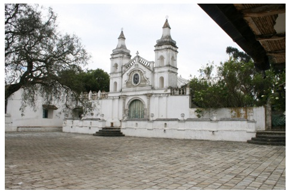
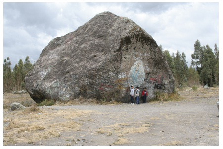
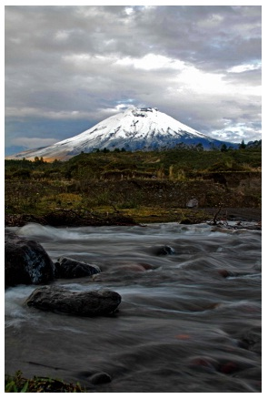

Guía Turística Latacunga
TRADICIÓN, CULTURA Y GASTRONOMÍA
Monasterio de Tilipulo
Más conocida como la Hacienda Obraje Tilipulo, tiene un reloj de sol, patios, una laguna, árboles, una iglesia antigua, un cementerio, salones y muchas áreas verdes a su alrededor. Es considerada de gran valor histórico, porque aquí se reunieron los patriotas latacungueños para firmar el Acta de Independencia de la ciudad de Latacunga.

FOTO:. IVAN CAICEDO ATIAGA
Piedra Chilintosa
Durante una de las erupciones del Volcán Cotopaxi, lanzó una piedra de gran magnitud, la cual después de recorrer cierta distancia en medio de los escombros, llegó a un sitio casi de desértico paisaje. Llamada la piedra Chilintosa, a la cual el pintor de volcanes, dejó sobre la misma una ilustración de la Virgen María que perduró por muchos años

FOTO:. IVAN CAICEDO ATIAGA
Volcán Cotopaxi
Está ubicado en la Cordillera Central de los Andes Ecuatorianos, a una altura de 5897 m.s.n.m., es el volcán más alto y activo del mundo. Su vista panorámica es única y la cual permite apreciar el paisaje tanto vegetal, como algunos rasgos minerales de anteriores erupciones volcánicas. Cuenta con refugios, los cuales dan a los turistas servicio de estadía y alimentación.

FOTO:. IVAN CAICEDO ATIAGA